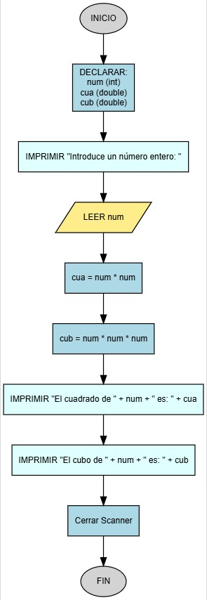

Calculadora de Cuadrado y Cubo
¡Tu primer programa interactivo! Escribe un programa que pida al usuario un número entero y luego muestre en pantalla el cuadrado y el cubo de ese número.

Requisitos
Todo el código debe estar dentro del método main.
- Pide al usuario que introduzca un número con el texto exacto:
Introduce un número entero:. - Usa la clase
Scannerpara leer el número que el usuario escriba. - Calcula el cuadrado (
num * num) y el cubo (num * num * num). - Imprime el resultado del cuadrado con el formato:
"El cuadrado de [num] es: [cua]". - Imprime el resultado del cubo con el formato:
"El cubo de [num] es: [cub]".
Ejemplo de uso esperado
Introduce un número entero: 5
El cuadrado de 5 es: 25.0
El cubo de 5 es: 125.0
Introduce un número entero: 0
El cuadrado de 0 es: 0.0
El cubo de 0 es: 0.0
Introduce un número entero: -2
El cuadrado de -2 es: 4.0
El cubo de -2 es: -8.0